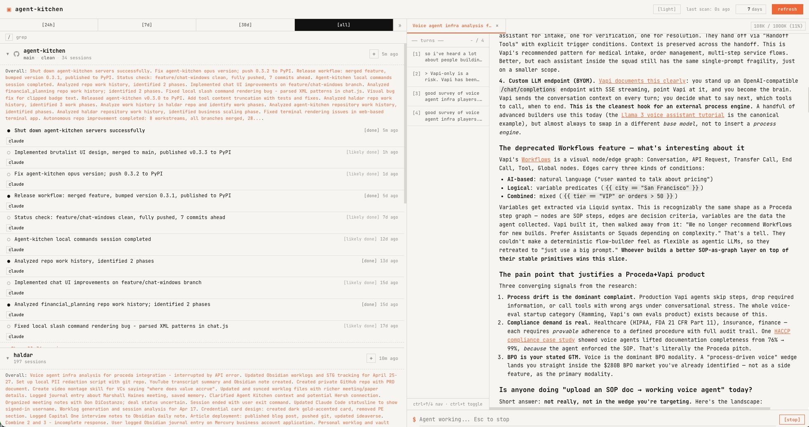
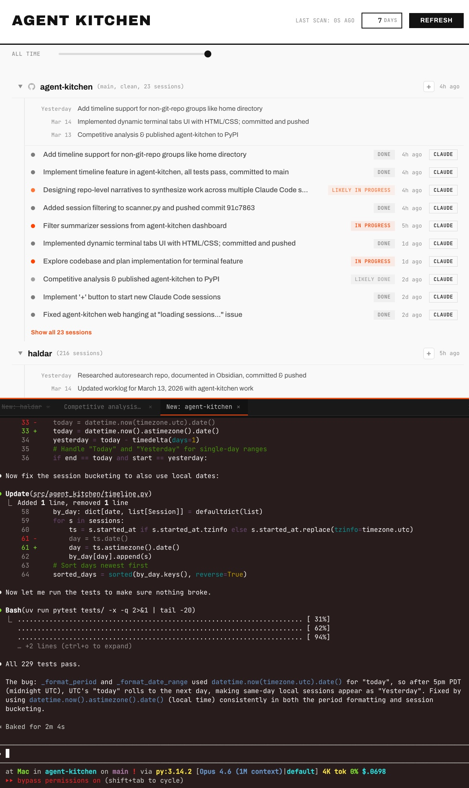

You run dozens of AI sessions a day across repos, branches, and tools. Where did that fix land? What's still in progress? Agent Kitchen reads your Claude Code and Codex CLI sessions, summarizes them, and gives you the full picture — one command, zero config.
uvx agent-kitchen web

No signup. No cloud. No workflow changes. It reads the session files already on your machine and gives you a bird's-eye view.
Claude Code and Codex CLI sessions in one place, grouped by git repo, sorted by recency.
Each session gets a one-line summary via Claude Haiku. Instantly know what each session did without reading logs.
Current branch, dirty files, unpushed commits. See the state of every repo at a glance.
AI-generated narrative of how work evolved across sessions. "Yesterday: fixed auth bug. Mar 14: implemented retry logic."
Full terminal emulator in the browser via xterm.js. Click a session and pick up exactly where you left off.
Cached summaries load instantly. LLM summaries generate in the background. The dashboard never blocks.
Vim-style j/k navigation, fuzzy search with /, expand with Enter. Feels like home.
Time range slider, fuzzy search across all sessions. Filters out SDK noise and subagent sessions automatically.
Start new Claude sessions in any repo directly from the dashboard. One click, zero friction.
Click any session row and a full terminal slides up from the bottom. Multi-tab support. Real PTY. Runs your actual shell with full Claude Code context.

No database. No cloud. Just reads files from your filesystem and serves a local dashboard.
Reads JSONL session files from ~/.claude and ~/.codex
Adds live git status per repo (branch, dirty, unpushed)
Claude Haiku generates one-line summaries + status labels
Sessions grouped by repo, sorted by most recent activity
FastAPI serves JSON API + static frontend at localhost
Everything is reachable without touching the mouse.
Most tools in this space are orchestrators. Agent Kitchen is the only one built for developers who use Claude as an everything-agent.
| Feature | Agent Kitchen | Conductor | Sculptor | Claude Squad |
|---|---|---|---|---|
| Non-repo sessions | ✓ First-class | ✗ | ✗ | ✗ |
| LLM session summaries | ✓ | ✗ | ✗ | ✗ |
| Zero workflow change | ✓ | ✗ | ✗ | ✗ |
| Resume in browser | ✓ | ✗ | ✗ | ✗ |
| Repo timeline | ✓ | ✗ | Replay | ✗ |
| Setup | One command | App download | App download | Homebrew + tmux |
| Open source | Apache 2.0 | ✗ | ✓ | ✓ |
If you use Claude Code or Codex CLI, you already have session data. Agent Kitchen just makes it visible.
uvx agent-kitchen web